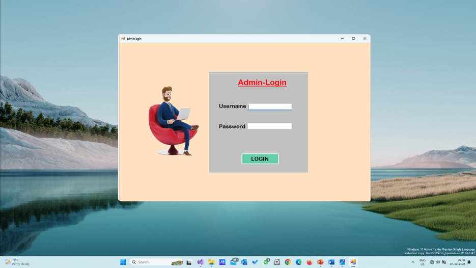

A responsive Employee Management System developed using PHP, MySQL, JavaScript, Bootstrap, HTML, and CSS. The platform helps organizations manage employee records, salary details, authentication, and administrative workflows efficiently.
Academic Web Development Project
The system allows administrators to manage employee information, update salary details, maintain records, and control system access through a secure and responsive management dashboard.
Developed secure employee management workflow, optimized database handling, and implemented responsive admin panels for better user experience and efficient data management.
Successfully developed a modern employee management platform with efficient record handling, secure authentication, and responsive administrative operations.
← Back to Portfolio